Setting up SDL in Visual Studio.NET 2005/2008 Express
Last Updated 11/02/09
Before you start, make sure you have the latest versions of Visual C++ 2005 express, and the Visual Studio service pack. If you don't, SDL will not work with Visual C++ 2005 express. I have a mini tutorial to properly set up VC++ here.
1)First thing you need to do is download SDL headers and binaries.
You will find them on the SDL website, specifically on this page.
Scroll Down to the Development Libraries section and download the Windows development library
Open the zip and there should be a folder inside of it.
Copy that folder to where ever you want. In these tutorials I'm putting the folder in C:\.
2)Start up Visual Studio and go to Tools -> Options:
3)Next go to the "VC++ Directories" under "Projects and Solutions". Set "Show Directories For:" to "Include files". Click on the folder icon.
Add the include directory from the SDL folder you extracted.
4)Set "Show Directories For:" to "Library files" and the lib directory from the SDL folder you extracted.
5)Now take the SDL.dll from the archive (it should be inside the lib subfolder) and extract it. You're going to put this in the same directory as your project/exe when you compile it.
Alternatively, you can copy SDL.dll to C:\WINDOWS\SYSTEM32 so your SDL app will find SDL.dll even if it's not in the same directory. If you're using a 64bit version of Windows, you'll want to put the dll in C:\Windows\SysWOW64.
The problem with this method is if you have multiple SDL apps that use different versions of SDL, you'll have version conflicts. If you have SDL 1.2.8 in SYSTEM32 when the app uses 1.2.13 you're going to run into problems. Generally you want to have your SDL.dll in the same directory as your executable developing and you'll always want to have SDL.dll in the same directory as the exe when distributing your app.
6)Now start a new win32 console project:
7)Go to application settings and make sure it's an empty project:
8)Then add a new source file to the project:
9)Now paste the following code into your new source file:
You will find them on the SDL website, specifically on this page.
Scroll Down to the Development Libraries section and download the Windows development library
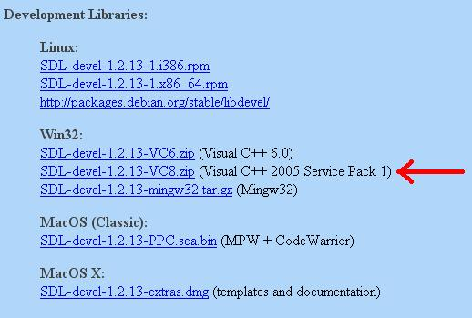
Open the zip and there should be a folder inside of it.
Copy that folder to where ever you want. In these tutorials I'm putting the folder in C:\.
2)Start up Visual Studio and go to Tools -> Options:
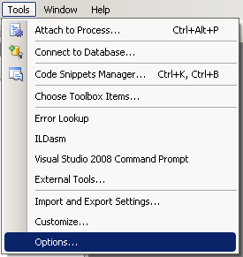
3)Next go to the "VC++ Directories" under "Projects and Solutions". Set "Show Directories For:" to "Include files". Click on the folder icon.
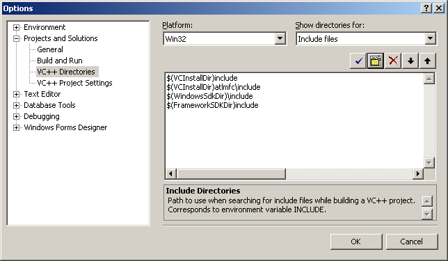
Add the include directory from the SDL folder you extracted.
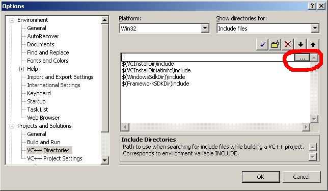
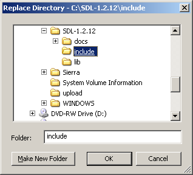
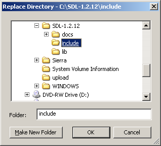
4)Set "Show Directories For:" to "Library files" and the lib directory from the SDL folder you extracted.
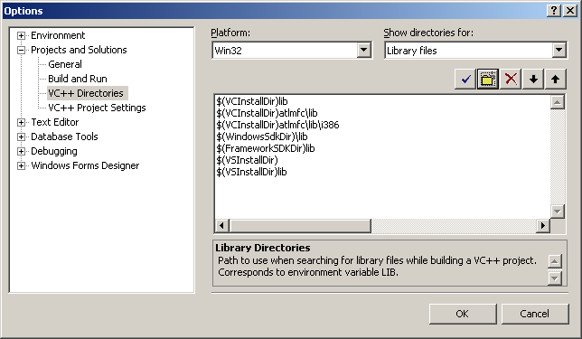
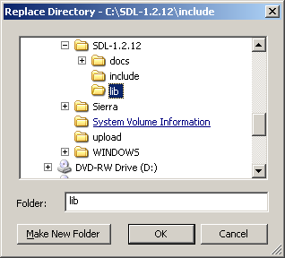
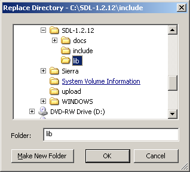
5)Now take the SDL.dll from the archive (it should be inside the lib subfolder) and extract it. You're going to put this in the same directory as your project/exe when you compile it.
Alternatively, you can copy SDL.dll to C:\WINDOWS\SYSTEM32 so your SDL app will find SDL.dll even if it's not in the same directory. If you're using a 64bit version of Windows, you'll want to put the dll in C:\Windows\SysWOW64.
The problem with this method is if you have multiple SDL apps that use different versions of SDL, you'll have version conflicts. If you have SDL 1.2.8 in SYSTEM32 when the app uses 1.2.13 you're going to run into problems. Generally you want to have your SDL.dll in the same directory as your executable developing and you'll always want to have SDL.dll in the same directory as the exe when distributing your app.
6)Now start a new win32 console project:
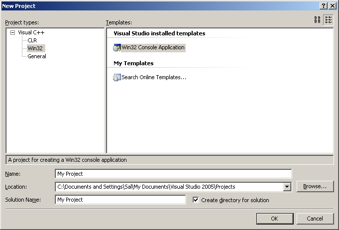
and click ok.
7)Go to application settings and make sure it's an empty project:
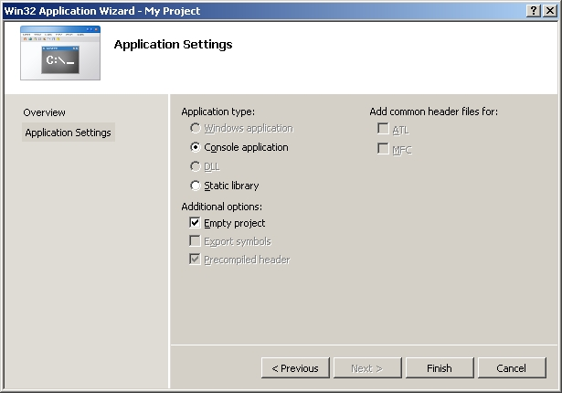
and click ok.
8)Then add a new source file to the project:
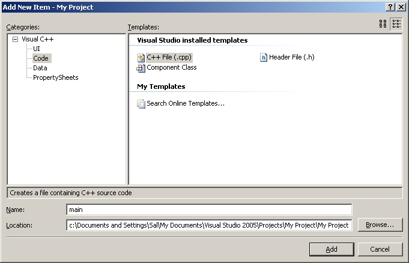
9)Now paste the following code into your new source file:
#include "SDL.h" int main( int argc, char* args[] ) { //Start SDL SDL_Init( SDL_INIT_EVERYTHING ); //Quit SDL SDL_Quit(); return 0; }
and save the source file.
10)Next go to project settings.

11)In the C/C++ menu under general, set "Detect 64-bit Portability Issues" to "No".
12)In the C/C++ menu under Code Generation, set "Runtime Library" to multi-threaded dll.
13)In the Linker menu under Input, paste:
13)In the System menu, set the subsystem to windows:
Now Build. Make sure SDL.dll is in the same directory as the project/executable. If there are no errors, you're finished. Otherwise go back and make sure you didn't skip a step.
10)Next go to project settings.
11)In the C/C++ menu under general, set "Detect 64-bit Portability Issues" to "No".
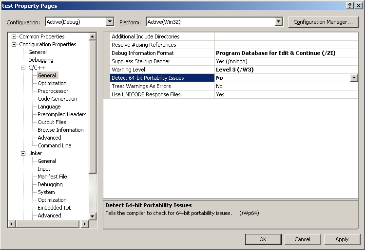
12)In the C/C++ menu under Code Generation, set "Runtime Library" to multi-threaded dll.
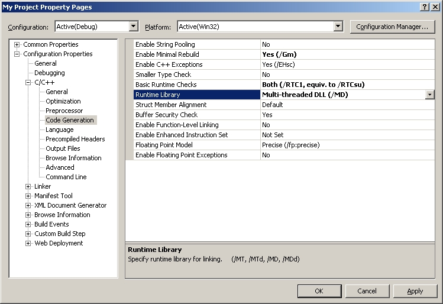
13)In the Linker menu under Input, paste:
SDL.lib SDLmain.lib
in the additional dependencies field.
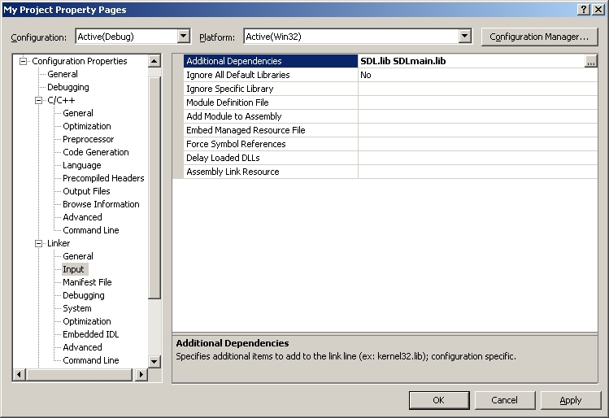
13)In the System menu, set the subsystem to windows:
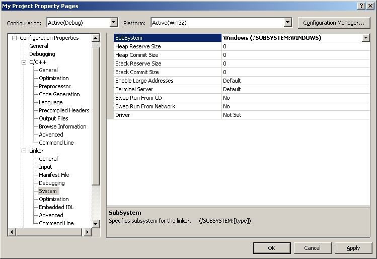
Now Build. Make sure SDL.dll is in the same directory as the project/executable. If there are no errors, you're finished. Otherwise go back and make sure you didn't skip a step.